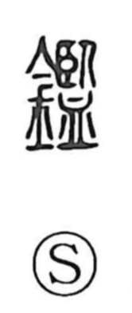

鑑

Uncategorized
Kun: kagami, kangamiru, miru | On: kan
mirror ・ to examine ・ to appraise ・ to take warning from
Explanation
鑑 is a phono-semantic character built on 監. The older graph 監 shows eyes cast down toward a water-filled basin that reflects one’s image—a water mirror—hence the senses “mirror” and “to look.” When mirrors came to be made of bronze, copper, and iron, the metal element 金 was added, yielding 鑑 to indicate a crafted mirror and, by extension, the act of examining or appraising by reflection. Its on reading kan aligns with a sound group that includes characters like 鏡, 景, and 煌, all associated with brightness and shining—fitting echoes of a reflective surface.